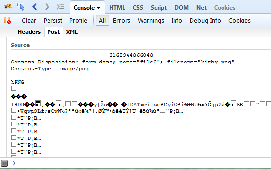

Drag n Drop file uploads with Mithril
The other day, a co-worker was asking me for some help porting an HTML5 drag-n-drop file upload directive from Angular to Mithril.
At a glance it may seem like a pretty difficult task for a backend guy who just started learning Mithril. As it turns out, there's a lot domain-specific knowledge required, but the Mithril aspect is not particularly daunting.
So, let's see how this would work. First, let's get the plain vanilla drag-n-drop to work outside of Mithril.
The drag-n-drop API requires some amount of setup to get going. On the UI side, we want to visually indicate to the user that they have dragged something over a droppable area (and likewise, reset the visuals if the user drops or drags away from the droppable area). In addition we want to run something once a file is dropped.
So for starters, we need to define events to handle all of these cases.
var element = document.body //let's just use body for now
element.addEventListener("dragover", activate)
element.addEventListener("dragleave", deactivate)
element.addEventListener("dragend", deactivate)
element.addEventListener("drop", deactivate)
element.addEventListener("drop", update)
window.addEventListener("blur", deactivate)
function activate(e) {
e.preventDefault()
}
function deactivate() {}
function update(e) {
e.preventDefault()
}
The boilerplate above takes care of setting up all the relevant event handlers, but for now each event just calls empty functions. The activate and update functions need to call preventDefault in order for drag and drop to work correctly.
Let's make things a bit more functional. Since the files are only available once the update event is triggered, we need to expose the data with another event handler:
function dragdrop(element, options) {
options = options || {}
element.addEventListener("dragover", activate)
element.addEventListener("dragleave", deactivate)
element.addEventListener("dragend", deactivate)
element.addEventListener("drop", deactivate)
element.addEventListener("drop", update)
function activate(e) {
e.preventDefault()
}
function deactivate() {}
function update(e) {
e.preventDefault()
if (typeof options.onchange == "function") {
options.onchange((e.dataTransfer || e.target).files)
}
}
}
Now we can start using our dragdrop function instead of needing to type all that boilerplate all the time:
dragdrop(document.body, {
onchange: function(files) {
console.log(files)
}
})
Next, we need to create a function to upload files. In an MVC setting, this kind of concern belongs in the model layer. So let's create a model method to deal with file uploads.
var Uploader = {}
Uploader.upload = function() {
//todo: upload files
}
Let's suppose that we want to POST the files to the URL /api/files. The problem is that you can't just serialize a file into a regular HTTP request. Instead, we need to use the HTML5 FormData class, which creates an object that can be sent via XMLHttpRequest, but encodes the request as multipart/form-data. In order to ajax a FormData instance instead of serializing data as JSON, we need to override m.request's default serialize option:
Uploader.upload = function(files) {
var formData = new FormData
for (var i = 0; i < files.length; i++) {
formData.append("file" + i, files[i])
}
return m.request({
method: "POST",
url: "/api/files",
data: formData,
//simply pass the FormData object intact to the underlying XMLHttpRequest, instead of JSON.stringify'ing it
serialize: function(value) {return value}
})
}
Now we are able to take our dragdrop function and use it with our model entity:
dragdrop(document.body, {onchange: Uploader.upload})
You can verify that the code is working by dropping a file onto the page, and inspecting the request object.

Integrating to Mithril
In Mithril, templates are made out of virtual DOM elements (i.e. javascript objects that represent DOM elements).
The DOM elements themselves are only accessible from config functions in views. Let's hook our dragdrop function into a config:
//an uploader module
var uploader = {}
uploader.controller = function(options) {
return options
}
uploader.view = function(ctrl) {
return m(".uploader", {
config: function(element, isInitialized) {
if (!isInitialized) {
dragdrop(element, {onchange: ctrl.onchange})
}
}
})
}
All we're doing here is calling the dragdrop function as we did before, but passing another event handler to it. This event handler will be defined by a parent component.
Now this module can be used by another components:
var demo = {}
demo.controller = function() {
return {
title: m.prop("Upload something"),
uploader: submodule(uploader, {
onchange: Uploader.upload
})
}
}
demo.view = function(ctrl) {
return [
m("h1", ctrl.title()),
ctrl.uploader(),
m("p", "more stuff")
]
}
m.module(document.body, demo)
Notice we're using the submodule helper from this article to cut down on the amount of noise.
You can see a running example of this code here
Conclusion
As you play with this code, you'll likely want to add styling for when the user drags a file over the drop area, as well as remove the style when the user drag away from the drop area. This can be accomplished by adding and removing CSS classes in the activate and deactivate functions. I'm leaving this as an exercise to the reader.
In this article we saw how we can work our way from a simple library to full Mithril integration. Understanding this workflow is a key in learning how to integrate third-party libraries to Mithril, how to write reusable components and how to organize the flow of data across different components.
And hopefully you've also learned a thing or two about the nuts and bolts of the cool and flashy HTML 5 drag-n-drop API.
comments powered by Disqus